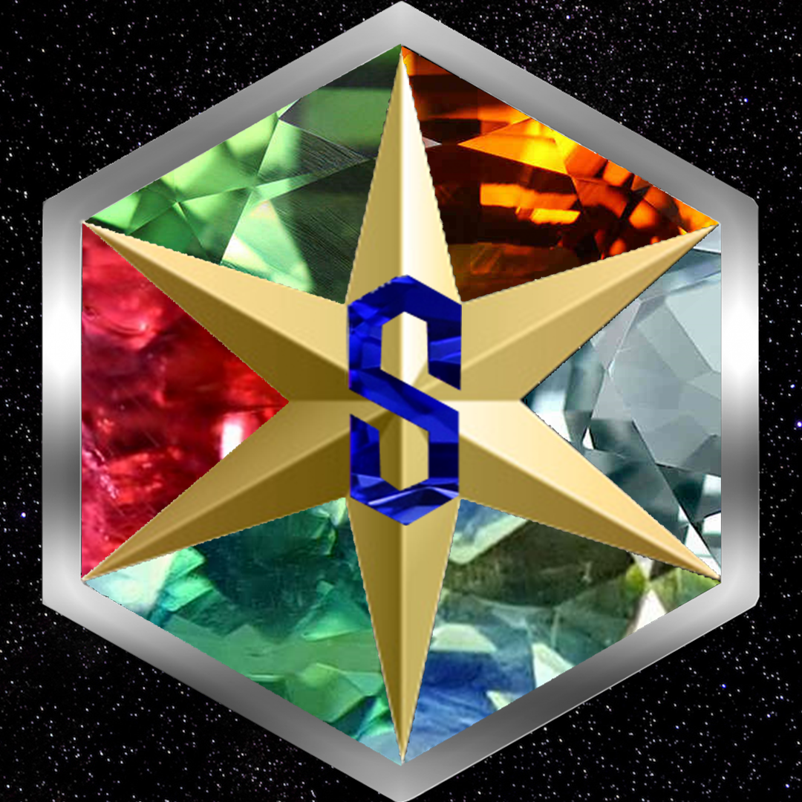

accueil
page 1
page 2
page 3
a propos du site
ce site est réalisé par Axel Gallard élève de la 1G9 alias StarSaphir  ce site a vue le jour dans le cadre du projet HTML du lycée Touchard si vous souhaitez me contacter vous pouvez
cliquez ici